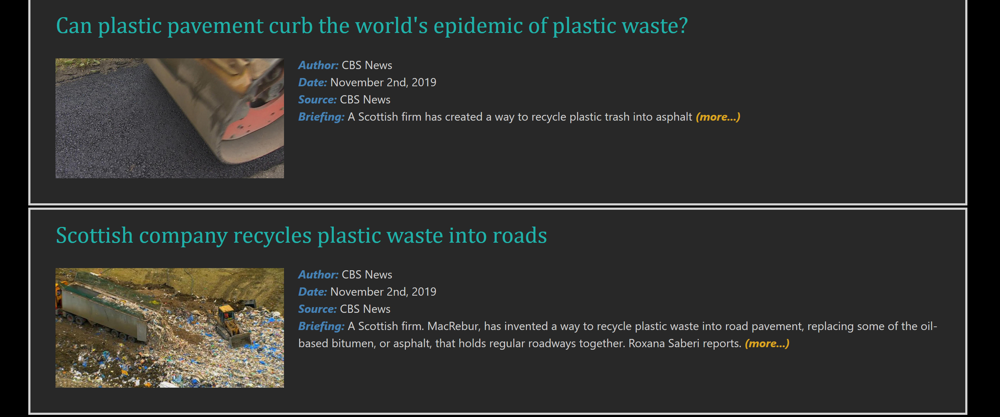
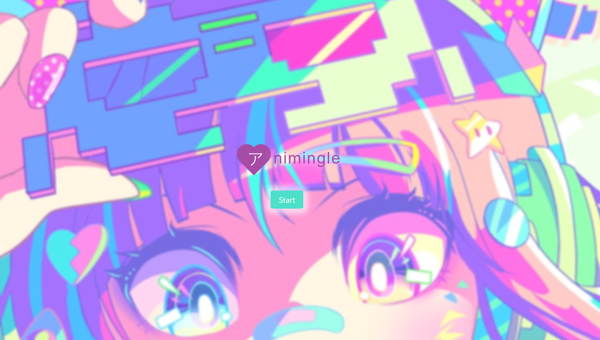

Hi, I'm Zach...I like all things computers, any and all music, and venturing into the great outdoors. I recently received a Bachelor of Science from Georgia State University in Computer Information Systems. And then immediately enrolled in a Web Development | Coding Boot Camp at Georgia Tech greatly improved my programming skills and expanded my technical expertise. I am currently job searching, and I welcome any and all inquiries. Shoot me a text, email, or phone call... I'm always free to chat with some fellow computer nerds!
Skills: Javascript, nodeJS, React, MongoDB, MySQL, Java, Swift 🔥 🔥 🔥
- Recycling App (Deployed to Heroku)
- Recycling App (Github)
- Anime Date App (Deployed to Github Pages)
- Anime Dating App (Github)
- Liri Node App
- Tune Labz (Currently under rebuild...will be back up soon!)
- Tune Labz (Github)
Projects
For this app, our project team wanted to take on a topic that was bigger than ourselves ...so, we decided to make an app that addresses environmental causes in hopes of bettering our local environment - thus, we named it EnvironmentAtlanta. For this project, we used a mixture of jQuery, Javascript, Sequelize for database, and an express framework for the routing; along with a few API connections to pull in data. For this project, I focused on the creation of the news feed page and its styling. I found inspiration for the aesthetics from graffiti art on our local Krog Street Bridge (if you haven't checked it out, a must). In order to collect the data from the various news feed, I implemented an API called NewsAPI that scraped news sources by keyword to come up with relevant news topics involving the environment with a specific emphasis on recycling.
For this application, our project team, (which consisted of myself, Will West, and Kevin Abrams) drew inspiration from our lonely lives as single nerds. We decided to create an application that combined our love of anime while attempting to fill the void of countless hours spent programming alone on our computers (I'm semi-kidding, really all very cool guys, but you get the point). We set out to create an application that used the users facial profile characteristics (API name, face++) and use a person's intrinsic characteristics (such as a confidence rating,happiness/solemness, and excitement, etc.) to determine suitable anime matches passed upon our proprietary matching algorithm (have to defer all credits to JS wizard, Will West). We were able to give the user a variety of choices of suitable anime matches (similar to what you would find on your typical dating app) and from there the user is able to schedule available times (Google calendar) to converse with said character. Next, using a manipulated chatbot (Microsoft Azure Cloud), we were able to allow the user to chat with someone who is non-biased and discreet. Although the app is admittedly silly in nature, it allowed us to use an eclectic mix of cutting-edge technologies -- we also had a great deal of fun styling it so I hope you enjoy it!
For the Liri Node app, the objective was to show off some skills using Node.js to query APIs Bandsintown, Spotify, and Rotten Tomatoes. This allowed the user the opportunity to find out when their favorite artists will play next, more information about their favorite song, and find out more information about one of their favorite movies. This app allowed me to display some of my experience figuring out some of the nuances of working with REST APIs. I querying the necessary data by implementing Ajax requests to retrieve a user's input requests. Although the app doesn’t have a pretty front-end (command-line app), it was one of those special moments for me when everything clicked when I was filming me inputting the data and getting the requests. Watch and enjoy (P.S. I tried to speed things up a little!!)
Tune Labz combines some ideals of open source software by incorporating a version-control tracking system. It visualizes a GUI representation of a branch - a parent-child relationship - that splits as many times as the users want in order to fork a version of any track
of their choice by resubmitting the track and then the program checks for discrepancies in audio frequencies. This is a place where creatives can take their work and put it out there to have others simply mess-around with it (professionally or just goofing off) and allow
the user to put their own unique twist on it. In phase II, Tune Labz will allow for collaborative audio editing by implementing sockets.io to provide the users with real-time feedback and interaction with other musicians. During the creation of this app, there were quite
a few setbacks along the way (switching database technologies -- started with MySQL(didn't seem like a good choice, but probably doable) => and then switched to MongoDB (for user login and track lineage) and S3 (for audio blob) => and most recently switched to DynamoDB
(for lineage and tracks info) **has better integration with S3). I was admittedly experiencing a bout of programmer's block when I started (yes, a real thing!), and thus, adjusted the project scope. I think the thing I learned most from this project is that no matter
what, you are going to face obstacles during any project you start (especially when there's not a pre-set, cookie-cutter method for how to build it). And ultimately, it's how you handle that adversity, think creatively to solve problems outside the box and view it
as a learning experience instead of a defeat. In summary, I have been attempting to rebuild this project from the ground up for the last month. I'm grateful for the experience because it pushed me outside of what I was comfortable attempting. The project, Tune Labz,
has taught me more about experimenting with the MERN (SERN/DERN) stack and JS than any of my other projects combined. (MERN, for the nonprogrammer’s, is: MongoDB, Express, React, and Node.js) But that's merely
semantics 😉. One of these days...it's gonna happen....its gotta... !!!
I hope you enjoyed checking out my page. I really enjoyed the process of making it. Again, please don't hesitate to reach out!!! I look forward to hearing from you.